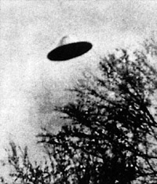

L'objet photographié ce jour-là à Redbud, plus net que le décor laisse penser qu'il se trouvait en fait devant
les arbres, et était donc plus petit qu'on pourrait le penser

La Liberté de ce jour-là, titrant sur La "soucoupe volante" vue par un italien
En plein jour, Dean Morgan, photographe à mi-temps, descend le versant Sud d'une
colline boisée de Redbud (Illinois), lorsqu'il voit une soucoupe et la photographie (ci-contre) Cas Blue Book n° 21.